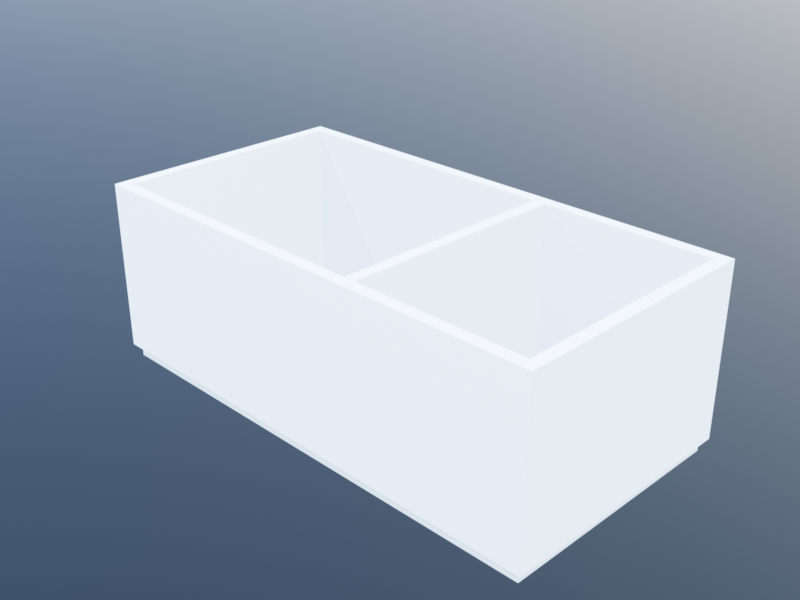
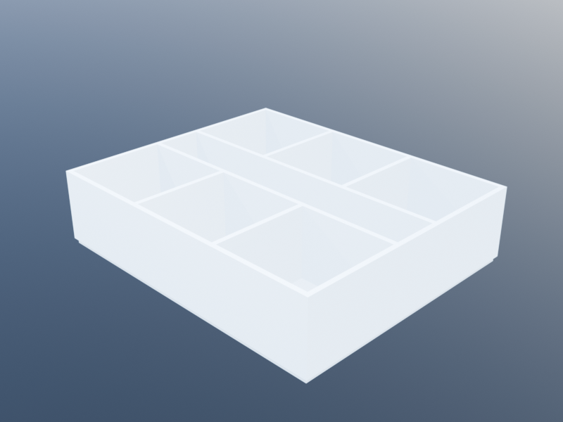
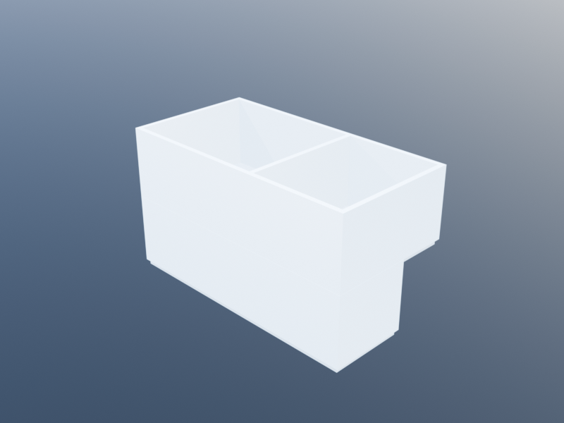

Spaces
The Spaces module provides a space-first approach to architectural layout. Instead of manually constructing individual walls, doors, and windows, you define spaces (rooms) as closed polygonal areas and connections (doors, windows, arches) between them. A single call to build() generates all BIM geometry automatically: shared walls between adjacent rooms are detected and built only once, exterior walls are placed around the perimeter, and openings are positioned on the correct wall segments.
A four-room house built from a single declarative layout:

A simpler two-room plan, living room + kitchen:

A six-office plan organised around a central corridor:

Stacking two storeys with the ^ operator:

After building, the result carries a descriptive boundary model that records which elements bound which spaces. This supports introspection queries ("which walls surround this room?", "which rooms does this door connect?") and validation rules ("every bedroom must be at least 9 m^2").
For a walkthrough with complete house designs, parameterized layouts, and custom validation, see the Spaces Tutorial.
Types
Space
A named bounded area on a floor plan. Each space is defined by a closed polygonal path and classified by a kind symbol.
struct Space
name::String
kind::Symbol # :space, :room, :wc, :kitchen, :corridor, :office, :bedroom, :parking, ...
boundary::ClosedPath
endThe kind field classifies the space's function, analogous to IFC's IfcSpaceTypeEnum. It is used by validation rules to apply kind-specific constraints (e.g., minimum area for :bedroom spaces).
Spaces are not constructed directly. Use add_space to create and register them on a Layout (or on a specific Storey of a multi-storey Layout).
SpaceConnection
A connection between two spaces, or between a space and the exterior. Connections declare where doors, windows, or arches should be placed.
struct SpaceConnection
kind::Symbol # :door, :window, :arch
space_a::Space
space_b::Union{Space, Symbol} # Space or :exterior
family::Union{Family, Nothing}
loc::Union{Loc, Nothing} # World-space point on the boundary edge
endspace_bis either anotherSpace(interior connection) or the symbol:exterior.familyspecifies the door or window family (dimensions, materials). It isnothingfor arches.locis a world-space point indicating where on the boundary edge the opening should be placed. Whennothing, the opening is centered on the shared wall segment. Exterior connections requirelocto identify which exterior wall receives the opening.
Connections are not constructed directly. Use add_door, add_window, or add_arch.
SpaceBoundary
A relationship between a space and a bounding element, inspired by IFC's IfcRelSpaceBoundary. These records are produced by build() and enable post-build introspection.
struct SpaceBoundary
space::Space
element # Wall, Door, Window, or nothing (for arches)
kind::Symbol # :physical (wall) or :virtual (opening/arch)
side::Symbol # :interior or :exterior
related_space::Union{Space, Nothing} # space on the other side (2nd-level boundary)
p1::Loc # boundary segment start
p2::Loc # boundary segment end
endkindis:physicalfor walls and:virtualfor openings (doors, windows) and arches.sideis:interiorwhen the boundary is shared with another space, or:exteriorwhen it faces outside.related_spacerecords the space on the other side of the boundary (the IFC "2nd level" boundary concept). It isnothingfor exterior boundaries.elementisnothingfor arch boundaries, where no physical element is generated.
Constraint
Validation is handled by the typed Constraint system (defined in Constraints.jl), shared with downstream front-ends such as AlgorithmicArchitecture. A Constraint pairs a check function with a severity (HARD/SOFT/PREFERENCE) and a category; validate(result) runs every constraint attached to a plan and returns a ValidationResult grouping typed Violations by severity.
struct Constraint
name::String
severity::ConstraintSeverity
category::ConstraintCategory
check::Function # (BuildResult) -> Vector{Violation}
endSee the Validation System section below and Constraints.jl for the full type and algebra surface.
Storey
One horizontal slice of a building at a single elevation. Carries the spaces, connections, the BIM Level where elements attach, storey height, and default wall/slab families.
mutable struct Storey
spaces::Vector{Space}
connections::Vector{SpaceConnection}
level::Level
height::Real
wall_family::WallFamily
slab_family::SlabFamily
generate_slabs::Bool
endLayout
The unifying container: a building as a stack of Storeys plus the validation Constraints that span them. A single-storey Layout is what one-floor plans were previously; a multi-storey Layout carries vertical structure without forcing the user to juggle multiple plans.
mutable struct Layout
storeys::Vector{Storey}
rules::Vector{Constraint}
endCreate a Layout with the floor_plan shortcut (one storey) or layout(s1, s2, …) (arbitrary storeys). Extend an existing Layout with add_storey!. Spaces, connections, and constraints are added incrementally with add_space, add_door, add_window, add_arch, and add_rule.
BuildResult
The per-storey result of build(): BIM element lists plus the descriptive boundary model for that storey. build(layout) returns a Vector{BuildResult}, one per storey.
struct BuildResult
storey::Storey
walls::Vector
doors::Vector
windows::Vector
slabs::Vector
boundaries::Vector{SpaceBoundary}
endBuildResult supports tuple destructuring so you can extract just the element lists:
walls, doors, windows, slabs = build(plan)It also has a custom show method that summarizes the counts:
result = build(plan)
println(result)
# BuildResult(4 spaces, 12 walls, 3 doors, 5 windows, 4 slabs, 24 boundaries)Constructor Functions
floor_plan
Create an empty floor plan with default or custom parameters.
floor_plan(; level=default_level(),
height=default_level_to_level_height(),
wall_family=default_wall_family(),
slab_family=default_slab_family(),
generate_slabs=true,
rules=Constraint[])| Parameter | Default | Description |
|---|---|---|
level | default_level() | The building level for this floor plan |
height | default_level_to_level_height() | Floor-to-floor height |
wall_family | default_wall_family() | Wall family for generated walls |
slab_family | default_slab_family() | Slab family for generated floor slabs |
generate_slabs | true | Whether to generate floor slabs for each space |
rules | Constraint[] | Constraints to check after building |
plan = floor_plan(
height=2.8,
wall_family=wall_family(thickness=0.2),
slab_family=slab_family(thickness=0.25),
rules=[KhepriBase.min_area(:bedroom, 9.0), KhepriBase.has_door()])add_space
Register a named space on a floor plan. Returns the new Space.
add_space(plan::Layout, name, boundary; kind=:space)The boundary must be a ClosedPath. The kind keyword classifies the space for validation and semantic purposes.
room = add_space(plan, "Living Room",
closed_polygonal_path([xy(0,0), xy(6,0), xy(6,5), xy(0,5)]),
kind=:room)
corridor = add_space(plan, "Corridor",
rectangular_path(xy(0, 5), 10, 1.2),
kind=:corridor)add_door
Declare a door between two spaces, or between a space and the exterior. Returns the new SpaceConnection.
add_door(plan::Layout, space_a::Space, space_b::Union{Space, Symbol};
family=default_door_family(), loc=nothing)For interior doors (space_b is a Space), the door is placed on the shared wall segment. If loc is nothing, the door is centered. For exterior doors (space_b is :exterior), loc is required to identify the target wall.
# Interior door centered on the shared wall
add_door(plan, bedroom, corridor)
# Exterior door at a specific location
add_door(plan, living, :exterior, loc=xy(3, 0))add_window
Declare a window between two spaces, or between a space and the exterior. Returns the new SpaceConnection.
add_window(plan::Layout, space_a::Space, space_b::Union{Space, Symbol};
family=default_window_family(), loc=nothing)Follows the same placement logic as add_door. Exterior windows always require loc.
# Large window on the south facade
add_window(plan, living, :exterior,
loc=xy(2, 0),
family=window_family(width=1.4, height=1.5))
# Window between two interior spaces
add_window(plan, office_a, office_b,
family=window_family(width=1.0, height=0.6))add_arch
Declare an open passage (arch) between two spaces. No wall is generated on the shared boundary. Returns the new SpaceConnection.
add_arch(plan::Layout, space_a::Space, space_b::Space)Arches are always between two interior spaces (not with :exterior). They have no family or location parameters – the entire shared edge becomes an open passage.
living = add_space(plan, "Living", rectangular_path(u0(), 6, 5))
dining = add_space(plan, "Dining", rectangular_path(xy(6, 0), 4, 5))
add_arch(plan, living, dining)add_rule
Attach a validation constraint to a floor plan. Returns the Constraint.
add_rule(plan::Layout, rule::Constraint)Constraints can be added at construction time via the rules keyword of floor_plan, or incrementally with add_rule.
add_rule(plan, KhepriBase.min_area(:wc, 3.0))
add_rule(plan, KhepriBase.has_connection())(KhepriBase's library constructors are not auto-exported, to avoid shadowing AlgorithmicArchitecture's LayoutResult-flavoured versions when both packages are in scope. Qualify with the KhepriBase. prefix as shown, or import KhepriBase: min_area, has_connection, … to pull them into the local namespace.)
Building
build
Generate all BIM elements from a Layout. Returns a Vector{BuildResult} — one per storey — each containing the generated walls, doors, windows, slabs, and the complete boundary model for that storey. For programs that use only a single storey, build(layout)[1] is the BuildResult most examples refer to.
build(plan::Layout) -> Vector{BuildResult}
build(storey::Storey) -> BuildResult # single-storey shortcutThe build process performs five steps:
- Edge classification: every edge of every space is classified as
:interior(shared with another space) or:exterior. Interior edges are deduplicated so that only one wall is generated per shared boundary. - Wall graph construction: classified edges are assembled into a WallGraph, with junctions at every polygon vertex. This captures the topology of the wall network.
- Chain resolution: the wall graph is resolved into chains – maximal runs of same-family segments that can be merged into single multi-vertex wall paths. L-corners get proper miter joints; abutting walls at T-junctions are extended to meet the through-wall's face. This typically reduces the number of wall objects significantly (e.g., a 5-room house with 16 edge segments produces 5 merged walls).
- Opening placement: doors and windows are placed on the merged wall paths. Positions are adjusted to account for chain offset and segment orientation within the merged path. Interior openings are centered on the shared wall unless
locoverrides the position. Exterior openings uselocto find the nearest exterior wall. - Slab generation: if
generate_slabsistrue, a floor slab is generated for each space using its boundary path.
Throughout the process, SpaceBoundary records are accumulated to build the boundary model.
result = build(plan)
# Access elements directly
result.walls
result.doors
result.windows
result.slabs
result.boundaries
# Or use tuple destructuring
walls, doors, windows, slabs = build(plan)Query Functions
Computed Properties (Pre-Build)
These functions operate on Space objects directly and do not require a BuildResult.
space_area
Compute the area of a space using the shoelace formula on its boundary vertices.
space_area(space::Space) -> Realroom = add_space(plan, "Room", rectangular_path(u0(), 5, 4))
space_area(room) # => 20.0space_perimeter
Compute the perimeter of a space by summing its boundary edge lengths.
space_perimeter(space::Space) -> Realspace_perimeter(room) # => 18.0Geometric Topology (Pre-Build)
These functions analyze the geometric relationships between spaces and do not require a BuildResult.
shared_boundary
Find shared boundary segments between two spaces. Returns a list of (p1, p2) location pairs representing the shared directed edges.
shared_boundary(space_a::Space, space_b::Space, tol=collinearity_tolerance())
-> Vector{Tuple{Loc, Loc}}shared_boundary(living, kitchen)
# => [(xy(6,0), xy(6,5))] -- a single 5m shared edgeexterior_edges
Find all exterior edges of a space within a plan (edges not shared with any other space).
exterior_edges(plan::Layout, space::Space, tol=collinearity_tolerance())
-> Vector{Tuple{Loc, Loc}}exterior_edges(plan, bathroom)
# => [(xy(10,6.2), xy(10,10)), (xy(10,10), xy(8,10))]neighbors
Find all spaces in the plan that share a boundary with the given space.
neighbors(plan::Layout, space::Space) -> Vector{Space}neighbors(plan, living)
# => [kitchen, corridor]Boundary Introspection (Post-Build)
These functions query the BuildResult boundary model produced by build().
space_boundaries
All boundaries for a given space. This is the equivalent of IFC's IfcSpace.BoundedBy inverse relationship.
space_boundaries(result::BuildResult, space::Space) -> Vector{SpaceBoundary}for b in space_boundaries(result, living)
println("$(b.kind) $(b.side): $(typeof(b.element))")
end
# physical exterior: Wall
# physical interior: Wall
# virtual interior: Door
# virtual exterior: Windowspace_walls
All unique walls bounding a space (physical boundaries only).
space_walls(result::BuildResult, space::Space) -> Vectorspace_doors
All unique doors accessible from a space.
space_doors(result::BuildResult, space::Space) -> Vectorspace_windows
All unique windows on a space.
space_windows(result::BuildResult, space::Space) -> Vectorbounding_spaces
All spaces bounded by a given element (wall, door, or window). Returns the spaces on both sides of a shared element.
bounding_spaces(result::BuildResult, element) -> Vector{Space}some_wall = result.walls[1]
bounding_spaces(result, some_wall)
# => [living, kitchen] -- for a shared walladjacent_spaces
All spaces adjacent to a given space through any boundary (interior walls, doors, windows, or arches).
adjacent_spaces(result::BuildResult, space::Space) -> Vector{Space}adjacent_spaces(result, corridor)
# => [living, kitchen, bedroom1, bedroom2, bathroom]Validation System
Constraints on spaces are typed Constraint values (defined in Constraints.jl), each carrying a severity (HARD/SOFT/PREFERENCE) and a category (DIMENSIONAL, ADJACENCY, AREA_PROPORTION, CIRCULATION, ENVIRONMENTAL). validate runs a vector of constraints against a BuildResult and returns a ValidationResult grouping typed Violations by severity.
Running Validation
validate (all registered rules)
Check all constraints registered on the plan.
validate(result::BuildResult) -> ValidationResultvalidate (specific constraints)
Check a specific list of constraints without requiring them to be registered on the plan.
validate(result::BuildResult, constraints::Vector{Constraint}) -> ValidationResultresult = build(plan)
# Validate all registered constraints
vr = validate(result)
vr.passed # true if no HARD violations
vr.hard_violations # Vector{Violation}
vr.score # 1000·hard + 10·soft + 1·pref
# Or a fresh list (not registered on the plan):
vr2 = validate(result, [KhepriBase.min_area(:wc, 3.0)])Use report(vr) to pretty-print the result grouped by severity.
Built-in Library
The library below is defined at KhepriBase.* but not exported, so using KhepriBase does not shadow AA's LayoutResult-flavoured versions. Qualify or import KhepriBase: min_area, … when you want them.
min_area
KhepriBase.min_area(kind::Symbol, sqm::Real; severity=HARD) -> ConstraintEvery space with the given kind must have floor area ≥ sqm m².
max_area
KhepriBase.max_area(kind::Symbol, sqm::Real; severity=HARD) -> ConstraintEvery space with the given kind must have floor area ≤ sqm m².
has_door
KhepriBase.has_door(; severity=HARD) -> Constraint
KhepriBase.has_door(kind::Symbol; severity=HARD) -> ConstraintEvery space (or every space of the given kind) must have at least one door.
has_connection
KhepriBase.has_connection(; severity=HARD) -> ConstraintEvery space must be connected to at least one neighbour (via door, window, or arch).
mustadjoin / mustnot_adjoin
KhepriBase.must_adjoin(kind_a::Symbol, kind_b::Symbol; severity=HARD) -> Constraint
KhepriBase.must_not_adjoin(kind_a::Symbol, kind_b::Symbol; severity=HARD) -> ConstraintRequire (or forbid) every space of kind_a to share a boundary with a space of kind_b.
Algebra
Constraints compose algebraically via combine, either, when, and with_severity. ConstraintSet bundles them and merge_constraints concatenates sets.
# Every bedroom must meet both area AND dimension minima:
combine(KhepriBase.min_area(:bedroom, 9.0),
KhepriBase.min_dimension(:bedroom, 2.6))Custom Constraints
Build a Constraint directly with a check function that takes a BuildResult and returns Vector{Violation}.
# Every bedroom must have at least one window.
bedroom_window = Constraint(
"Bedrooms must have a window", HARD, ENVIRONMENTAL,
result -> [
Violation("bedroom_window", HARD, ENVIRONMENTAL,
sp.name, "$(sp.name): bedroom has no window", 0.0, 1.0)
for sp in result.plan.spaces
if sp.kind == :bedroom && isempty(space_windows(result, sp))])
add_rule(plan, bedroom_window)The check function has full access to the BuildResult, so it can query boundaries, elements, areas, and adjacency to express arbitrarily complex constraints.
Fixer Loop
ConstraintFixer pairs a constraint-name substring with a rewrite function; apply_fixers(desc, build, constraints, fixers; max_iters) iterates build → validate → first matching fix until the design is hard-clean, no fixer matches, or max_iters is reached.
shrink = ConstraintFixer(
"shrink_overgrown", "max_area",
(plan, violation) -> # …rewrite plan, shrinking the named space…)
fixed_plan, vr = apply_fixers(plan, build, [KhepriBase.max_area(:wc, 12.0)],
[shrink]; max_iters=10)IFC Alignment
The Spaces module is designed with IFC (Industry Foundation Classes) concepts in mind:
Spacecorresponds toIfcSpace. Thekindfield mirrorsIfcSpaceTypeEnumvalues (though using Julia symbols rather than the IFC enumeration).SpaceBoundarycorresponds toIfcRelSpaceBoundary. It records the relationship between a space and an element that bounds it, withrelated_spaceproviding the 2nd-level boundary information (which space is on the other side).- The
space_boundariesquery is analogous to theIfcSpace.BoundedByinverse relationship. - The
:physical/:virtualboundary classification distinguishes solid walls from openings, paralleling IFC'sPhysicalOrVirtualEnum. - The
:interior/:exteriorside classification parallels IFC'sInternalOrExternalEnum.
This alignment means that BuildResult data can be mapped directly to IFC export, preserving the semantic space-boundary-element relationships that IFC-based tools (energy analysis, facility management) depend on.
See Also
- Spaces Tutorial – a guided walkthrough covering house design, parameterized layouts (office grids, radial plans), and custom validation rules.
- Wall Graph – the junction-aware wall network layer used internally by
build(). Can also be used directly for precise wall layout control. - Wall Graph Tutorial – a guided walkthrough of direct wall graph construction.
- Vertical Elements – reference for
wall,door, andwindow, which are the BIM primitives thatbuild()generates. - Horizontal Elements – reference for
slab, generated for each space whengenerate_slabsistrue.